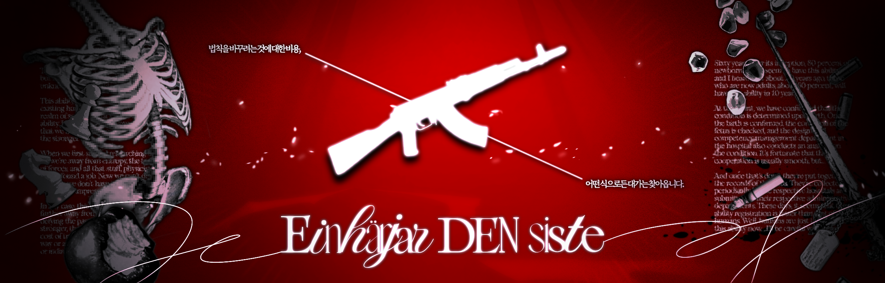

안내사항

에인헤랴르 덴 시스트. 통칭 에덴커
극시리 | BAND | 09 up | 11D | 2232 | ALL CP | 글그림 복합 | 배틀로얄 | 이능력 | 전투 | 조사
!! Trigger Warning !!
본 커뮤니티의 캐릭터가 폭력, 부상, 사망, 상해. 희생, 희생 강요, 대립 등을 당할 수 있습니다.
본 커뮤니티의 캐릭터가 중대한 선택을 강요받을 수 있습니다.
본 커뮤니티의 예정된 모든 엔딩은 해피엔딩이 아닐 가능성이 크며, 생존자가 매우 적을 가능성이 높습니다.
스토리 진행 도중 캐릭터들의 비밀 설정이 노출될 수 있으며, 캐릭터가 가진 비밀 설정이 철저히 이용당할 수 있습니다.
Community
7/26 개장, 8/5에서 8/6으로 넘어가는 자정 엔딩
본 커뮤니티는 글, 그림 복합 커뮤니티입니다. 프로필 제출에는 AI를 사용하지 않은 프로그램 그림 외관을 허용합니다.
본인의 그림이 아닌 경우 출처 기재를 필수적으로 부탁드립니다.
첫커 첫시리 러닝 불가합니다.
본 커뮤에는 총 5인의 관리진이 있습니다.
본 커뮤니티는 삼진아웃제를 채택하고 있습니다. 경고 3회 누적 시 강제 하차 및 제명 처리됩니다.
그러나, 이하의 경우와 같이 커뮤니티의 분위기를 심각하게 저해하는 행동 시 경고 없이 즉시 하차 처리할 예정이니 유의바랍니다.
캐릭터의 스탯 수치를 직접적으로 언급하는 것을 포함한 메타발언 (예시: 내 체력이 10이군.)
지인플
타인의 작업물 도용
과도한 초성 및 이모지 사용
수위표를 초과하는 언행
본 커뮤니티의 스토리 진행에 대한 적정 인원은 20 ~ 30명으로 예상하고 있습니다.
적정 인원수보다 과도하게 많은 프로필이 접수될 시, 신청서 합격제로 전환될 가능성이 있으니 이 점 인지하여 주시기 바랍니다.
일상 기간의 이벤트의 참여 제한이 낮은 만큼 미참여시 활동량 합격, 신청서 합격 인원 선정에 불이익이 있을 수 있습니다.
본 커뮤니티는 스토리가 진행되는 7/30일부터 8/6일까지 상황에 따라 연속적으로 전투가 진행되는 스토리로 구성됩니다.
해당 시간에 지속적인 전투 참여가 어려우시다면 러닝을 권장드리지 않습니다.
Character
모든 캐릭터는 인간이며, 특정한 이능력을 보유하고 있습니다.
이능력이 없는 인간 캐릭터는 불가능합니다.
모든 캐릭터는 세계관에 따라, 2068년인 현재를 기준으로 모두 성인입니다.
캐릭터의 외관에는 크게 제약이 없습니다.
단, 보는 사람에게 거부감을 느끼게 할 수 있는 외관(과캐디, 비현실적인 외관)은 지양합니다.
애매한 경우에는 사전에 질문방 또는 개인 밴드를 통한 문의 부탁드립니다.
관계가 깨끗한 캐릭터의 재탕이 가능합니다.
비밀 선관 포함 최대 2인의 선관이 가능하며, 선커는 금지합니다.
Owner
2009년생 이상 오너부터 러닝 가능합니다.
나이 속임 등이 적발될 경우 즉시 하차 처리 예정입니다.
세계관
I. 이능력
우리 사회에서 이능력이라는 것이 보편화 된 것이 얼마나 오래 된 이야기인지 아십니까? 처음에는 이정도로 일반적인게 아니었습니다.
우리같은 사람들이 딱 어릴 시절, 그러니까 부모님 세대가 이 세상의 중점일때에는 말입니다.
이능력이라는 것 자체가 그렇게 흔해빠진 특성이 아니었습니다.
해봤자 30명 집단에서 서너명 수준이었단 말입니다.
그리고 우리가 지금 성인이 되는 세대가 되고 나니 이능력을 보유한 인간이 매우 많아졌습니다.
아마 우리가 새로 가정을 꾸리고, 새로운 후손이 자라날 때가 되면 이능력이 없는 사람을 찾는게 더 힘들겁니다.
그렇다면, 이쯤 되어서 궁금한 것이 하나 생기기 마련입니다.
이능력은, 어디에서 처음으로 생겨났는가?
이능력에 대한 보고는 한 곳에서 시작되지 않았습니다. 그야, 이능력의 발생은 전세계적인 현상이었으니까.
그럼에도 연구자들은 생각하고 머리를 쥐어싸맸습니다. 이 현상의 시작에 대해서 탐구하고자 했으니.
이 현상의 인과관계에 대해서는 다른 이들도 매우 중요하게 생각했고, 그렇기에 끝없는 연구가 이어졌습니다.
그렇게 2010년 경 한 아이를 찾았다고 전해집니다. 물론,
다만, 확실한 것은 그 아이보다 이전에 이능력을 가졌다고 보고된 인물이 없었습니다. 그러니 그 아이가 시작점이라고 해두자. 하는겁니다.
그 시절의 연구자들의 말에 따르면 그 아이를 찾는 것도 고생했다고 합니다. 아무래도 고아였고, 동네의 어르신이 길렀으니.
아무튼간에. 세상은 그 아이를 라고 불렀습니다.
마치, 전염병이 터졌을때 최초의 환자(Patient Zero)를 찾는 것 처럼 이능력의 시작점을 찾고자 한 노력은 그 날 결실을 맺었습니다.
시초의 존재가 공표되자 온 세상 사람들은 난리가 났죠. 아무래도.
시초의 존재를 열렬히 지지하는 이들은 시초가 태어난 2002년을 기준으로 새로운 기년법을 만든다... 그러기도 한다는데.
지금은 시초력 68년이고... 그런 소리를 늘어놓는 인간들이 있습니다. 한심하죠.
저희는 그런 인간들을 두고 시초 절대주의자라고 부릅니다. 각자 여러방면으로 줄여 말하던 지라 같은 시초 절대주의자를 두고도 서로 못 알아듣기도 한다는군요.
뭐, 시초 전통주의자들은 당연하게도 시초를 열렬히 지지하겠죠. 물론, 자신이 이능력이 달갑지 않다면 시초를 증오할지도 모르겠습니다만. 고민을 해볼 필요는 있습니다.
실제로 주기적으로 시초 절대주의자들의 행보가 과격해짐에 따라 기존의 이능력에 반감을 가지던 이들과 시초 절대주의자들에 대한 반발심리로 생겨난 태초 회귀론자들이 생겨났습니다.
태초 회귀론자들은 이능력이 사회의 악이라고 주장하며 이능력이 없던 먼 과거같은 세상에서 다시 살아야 한다고 주장합니다.
당신은, 어느 쪽입니까?
1. 이능력의 정의
이능력에 대해서는 현재까지도 많은 연구가 진행되고 있습니다. 시초가 나타난지 60년은 넘게 지났지만 많은 이론과 가설이 오가고 있고, 그럼에도 아직 미지의 영역입니다.
아직도 이능력의 작동 원리, 형성 과정은 밝혀지지 않았습니다. 그것들을 밝혀내기엔 아직 우리가 깨우친 것들이 너무 적다고 하고있습니다.
하지만 모든 능력들은 핵심이 되는 사실이 있습니다.
기존의 인간들이 , 그것을 이능력이라고 칭합니다.
지식인들은 과학계에서 말하던 엔트로피니 뭐니... 아무튼, 그러한 잡다한 과학적 사실들에서 부터 얼마나 동떨어진 상황인지 탐구하고자 했습니다.
덕분에 물리학자들이 일자리를 찾았다는군요. 지금은 하고 싶어도 못 해서 난리났다고 하던데.
하여튼. 이능력은 우리가 알고 있는 상식에서 멀어질 수록 강하다고 보면 됩니다. 단순히 팔을 빨리 휘두르는 이능력보다, 시간을 거스르는 이능력이 더 강하겠죠.
그리고, 법칙을 거스르는 비용이라 해야할까요.
어떤 식으로든 대가는 찾아온다고 합니다. 직접적이던, 간접적이던. 다만 그 형태는 고정되는 편이라고 합니다.
2. 이능력 보유자
연구자들의 많은 연구 끝에 이능력의 존재여부와 형태는 라는 것을 확인했습니다.
그렇기에, 출산이 확인되면 병원에서 태아의 상태를 확인함과 동시에 병원에서 지정한 내부의 이능력 관리 부서에서도 태아의 이능력에 대한 분석을 진행합니다.
보통은 원활한 협조가 이루어지니 다행이라고는 하지만, 가끔 원하는 결과가 나오지 않았다고 분노하는 경우가 있다더군요. 전부 소중한 생명인데도.
시초가 태어난지 68년이 된 지금 시점에서, 최근 1년간 새롭게 태어난 신생아 중 라는 통계가 나왔습니다.
지금 성인이 된 이들이 태어날때... 그러니까, 20년 전에는 52%인걸 감안하면 빠른 증가세를 보입니다.
이 정도 추세를 볼땐 아무리 멀어도 10년 뒤면 모든 태아가 이능력을 가지고 태어날 듯 합니다.
신생아의 이능력 분석이 완료되면, 병원에서 관리하는 차트에 분석 결과를 같이 기록합니다.
이 정보는 주기적으로 가 각 국에 설립해둔 지부에 제출한다고 합니다.
요즘에는 인간의 신원 확인 보다도 이능력의 등록이 더 빠른 듯 합니다. 뭐, 인간은 이제 이능력을 사용하는 도구일 뿐이라는 걸까요.
II. P.M.C
원래, 이능력이 생겨난 지 얼마 되지 않은 시점에선 이능력이 매우 위협적이었습니다.
힘이라는게 다 그렇지 않습니까? 가지고 있다면 누군가는 그것을 휘두르려고 합니다. 그런게 세상입니다.
당연히 각 국에서도 이능력자들을 모아다 하려 했습니다.
여태껏 없었던 새로운 전술적 무기가 되기엔 충분했습니다. 현실의 상식을 뒤집어 엎어버리는데 눈독 들이지 않을 이유가 있겠습니까?
기존의 재래식 무기 체계는 물론이고 실시간으로 발전중이던 최신식 기술마저도 모두 이니 말입니다.
이능력을 조금만 더 잘못 다뤘다면 감히 멈출수 없는 세계적 전쟁이 끊임없이 일어났을 겁니다.
하지만 높은 인간들께선 그런 미래가 다가올 것이란 것도 다들 알고 있었을 겁니다.
그럼에도 멈출 수 없는 것이 바로 힘을 얻는 과정 아니겠습니까. 지지 않기 위해 발버둥치는 세상은 참 씁쓸하군요.
그래서 이 나섰습니다. 이능력을 범세계적으로 관리하고, 체계화 해야 한다며 주장을 펼쳤습니다.
참 어리석은 이야기 아닙니까? 그 말을 듣고 누가 "아, 그렇구나! 이런건 막 다루면 위험해!" 하겠습니까.
그런데 그걸 해냈습니다. 주요 인사들은 그 의인과 대면한 후 그것을 용케도 받아들였다고 합니다. 무슨 이능력을 쓴건지, 어떤 약점을 잡은건지... 알 노릇이 없습니다.
그 의인은 자신을 루트라고 부르라고 했습니다. 그 당시에는 가명으로 썼다고 하지만 지금은 일종의 가명이라기 보다는, 하나의 직위라고 보면 되겠습니다.
지금은 루트가 설립한 기관, 의 총수를 부를때 사용하는 단어입니다.
이능력 관리 본부는 직접 읽기엔 꽤나 지루하고 현학적이라 P.M.C. 로 줄여 부른다고 합니다. 지금은 P.M.C.의 3대 루트가 자리하고 있습니다.
여하튼, P.M.C.는 그런 뒷배경을 가지고 만들어 졌습니다. 전국의 이능력자들을 체계화해서 관리하고, 그런 이능력으로 일어나는 범죄를 예방하며 관리하는.
세간의 인식으로는 마음만 먹으면, 유용한 이능력들을 활용하기 좋은 새로운 꿈의 직장으로 여겨지고 있습니다.
뭐, 이능력이 없어도 일만 잘 하면 P.M.C.에 충분히 채용되긴 하겠지만 요즘 이능력 없는 사람들이 더 찾기 힘들지 않습니까.
P.M.C.는 전국적으로 영향력을 행사하는 기관인 만큼 사람들의 선망도 높은 편입니다.
1. 조직도
P.M.C.는 체계적인 이능력 관리를 표방하기 때문에 그 조직 구성또한 체계적으로 구성하려고 하고 있습니다.
기본적으로 가 되는 기관 하나가 존재합니다.
, 어느 국가도 소유권을 주장하지 않는 섬에 건물을 지었다고 하더군요. 독합니다.
본부 예하 조직으로는 각 대륙에 를 설치하였습니다.
사령부는 해당 대륙의 국가들의 관리를 유용하게 하도록 하는 목적입니다.
본부 다음으로 많은 인원들이 근무중이기도 하고 어느 정도 지위가 꽤 있다보니 본부보단 덜 구르고 싶고 이득을 많이 보고싶을때 선호되는 환경이라고 합니다.
그리고, 사령부 예하 소속의 는 각 국가에 하나씩 설치한다고 합니다.
지부의 인원은 기존의 국가가 운영하던 체제에 맞추어 운영하도록 합니다. 이를테면 국가 부처에 이능력부 라는게 생겼다고 보면 되겠습니다.
P.M.C.에서는 지부의 신설에 따른 국가 운영에 큰 차질을 빚지 않도록 배려했다고는 합니다만... 그럼에도 약간 껄끄러운 시선은 어쩔수 없습니다.
요약하자면 가 있는 방식입니다.
지부의 형태는 국가마다 모두 다르고요.
2. 대규모 채용
P.M.C.는 주기적으로 여러 부서의 방향성에 맞는 인원들을 채용하고 있었습니다.
이번엔 본부의 직할 병력을 공개적으로 성대하게 광고까지 해가면서 모집한다더군요.
직할 병력이 뭐가 좋길래 그렇게 호들갑이냐고요? 말해 뭐합니까.
비록 자신의 국가에서 소속되어 편하게 복무하진 못하지만, 그렇게 복무하는 인간들을 관리하는 본부에 소속되는 거잖습니까.
굳이 전투 병력이 아니어도 P.M.C.중에서도 을 가진 이들이 많습니다.
어떠한 집단에서도 달콤한 권력을 쥐고 우상이 될 수 있는 요직에 앉고 싶은 사람들이 한둘입니까?
그런데 하물며 한 국가가 아니라, 모든 국가를 관리하는 본부에 소속될 수 있다면? 그건 말도 못하죠. 저라면 당장 합니다.
물론 그 정도로 다른 이능력자들에게 선망의 대상이 되고, 위치가 중요한 만큼 는군요.
어디까지나 관리를 위한 기구이니 직접적인 전투를 할 필요는 없지 않겠습니까.
해봤자, 국가에서 일어난 이능력자들의 대규모 항쟁에 지원을 하거나 하는 정도? 그런게 아니면 어려운 곳을 돕거나.
뭐, 그렇게 희귀한 만큼 사람이 몰리는 것 아니겠습니까. 이미 본부에서 각 지부로 이능력자 병력에 대한 지원 요청 공문이 내려왔습니다.
몰려드는 지원자들에 대한 통솔, 훈련. 그런 것들을 위해서 말입니다. 지원자가 적지 않거든요.
3. 본부 구성
본부가 어떻게 구성되어 있냐고? 그런걸 모르고 이 세상을 어찌 살아갑니까. 저기 지나가는 치와와인 코코 주인인 8살 꼬마 애도 알겠습니다.
P.M.C는 군대 같은 구성을 하고 있습니다. 루트 아래의 여러 조직, 그리고 그 밑의 여러 조직...
정확히는 하나의 사단급 규모라고 보면 됩니다. 물론, 군사적 목적보다도 관리적 측면이 더 크니 과거에 있던 세계기구의 형태와 비슷한 느낌이겠지만.
P.M.C.의 본부에는 산하 부서. 그러니까, 본부의 업무를 직접적으로 보좌하는 곳이 꽤 많습니다.
루트가 소속되어 있으며 다른 부서들을 총괄하는 지휘부부터 시작해서,
각종 물류의 수송 및 관리를 담당하는 군수부, 법적인 마찰을 예방하기 위해 관련 법률 개정을 담당하는 법무부, 인사 채용을 담당하는 인사부,
그 외에도 의료 지원이 주가 되는 의무부, 선전 및 홍보를 담당하는 대외부, 이능력 관련 사건을 담당하는 감찰부. 그런 각종 부서가 많습니다.
하지만 다른 부서들은 차차하고, 지금 시점에서 공개 채용을 한다고 난리난 곳은 바로 입니다.
직할 병력대라 함은 P.M.C.가 직접 운용하고 다루는 군사 인력입니다.
다만 P.M.C.의 성격에 따라 병력의 운용은 는 합의를 거쳤습니다.
즉, 그들이 전쟁을 일으키고자 한다면 P.M.C.에 소속되지 않은 모든 이들과 대립하게 된다는 것이죠. 강한 이능력자도 각자의 사정에 따라 P.M.C.에 소속되지 않는 경우가 허다합니다.
P.M.C의 편제는 일반적으로 생각하는 군대의 편제와는 약간 다릅니다. 삼각편제라고 하는 것과는 거리가 있다는 이야기입니다.
A. 에실 여단
에실 여단은 본부 차원에서의 안보 유지를 위한 목적으로 설립되었습니다.
본부에서 각 지부들에 대한 각종 소요사태와 더불어, 각 국에서 일어나는 사태에 대한 을 주로 진행하게 됩니다.
각 국 지부에서 본부로의 추천을 받아 에실 여단 예하 병력에 소속되는 경우가 꽤나 많더군요. 아마 자기네들은 승진이라고 생각하겠죠.
에실 여단은 3개의 대대로 구성됩니다. 주요 병력으로 여겨지는 린트 대대와 블룸 대대, 그리고 에실 여단의 예비대로 운용되는 슬레이프 대대입니다.
린트, 블룸, 슬레이프 대대는 모두 동일한 편제로 구성되어 있습니다. 역할이 통일되고 구조가 고정되어야 적응이 편하죠. 예하 중대의 구성부터 역할까지.
린트, 블룸 대대의 본부중대는 행정 업무를, 제 1중대는 대대의 안보를, 제 2중대는 대대의 공세를, 제 3중대는 대대의 지원을, 마지막으로 제 4중대는 예비대로 운용하고 있습니다.
갑자기 예비대는 무엇이냐 하겠지만 아무래도 파견이 잦은 탓에, 대대 안에서 부재 인력을 채우기 위해 필요하다고 합니다.
기존 인원이 아님에도 본래의 효율을 내기 위해서 말로만 예비대지, 사실상 가장 빡세게 구르는 중대라고 하더군요.
그리고, 슬레이프 대대는 우선 린트 대대와 블룸 대대를 보조하고자 존재합니다.
평시에는 P.M.C의 경계 근무를 담당하지만, 유사시에는 P.M.C의 경계 방호 및 섬멸 작전에 동반됩니다.
이외에도, 린트 대대와 블룸 대대의 부재 인력이 대대 자체로 감당하기 힘들 정도로 많을때 인력의 지원을 동반하기도 합니다.
B. 바닐 여단
바닐 여단은 이능력의 전투적 측면에 대한 운용을 중점적으로 다루기 위해 설립되었습니다.
에실 여단의 단독 운용 만으로는 지속적으로 발전하는 이능력에 더불어, 고차원화되는 이능력 운용을 감당하기 어려웠기에 비교적 최근에 신설되었습니다.
쉽게 말해 실험적인 물자, 혹은 방식을 하기 위해 존재한다고 보면 됩니다. 뭐, 그렇다고 전투력이 부족한 것은 절대 아닙니다.
바닐 여단은 총 4개의 대대로 구성됩니다. 교육을 맡는 브륀힐 대대, 전투력을 맡는 라타토, 펜릴 대대. 그리고 실험적 연구가 주가 되는 헤이드룬 대대입니다.
브륀힐 대대는 교육훈련대대로 지정되었습니다. 말 그대로 교육을 시키고, 훈련을 시키는 대대입니다.
기존에는 새롭게 본부에 배치된 인원에 대한 교육 및 훈련만을 진행하지만, 때때로 정말 도 진행합니다.
기존 군대에 있던 훈련소라고 하던 것인가요? 그렇기 때문에 브륀힐 대대의 병력은 다른 대대와는 성격이 다른 편입니다.
브륀힐 대대는 총 5개의 중대와 1개의 본부 중대로 나뉘지만, 다른 대대의 본부 중대의 역할이 비슷할 뿐입니다.
5개의 중대는 모두 교육 훈련을 위한 인원들로 구성됩니다. 이능력 운용부터 시작해서, P.M.C.의 구성원이 되기 위한 교육을 진행할 수 있는 자격을 얻은 인원들입니다.
뭐, 일단은 대대이니 독자적인 군사 능력이 있긴 합니다만… 많은 기대는 하지 마십시오.
훈련을 위한 인원들이 대다수인 만큼, 그들이 실제로 운용되는 경우는 긴급한 재난에 훈련병들을 약식 훈련 시킨 후 투입하기 위한 용도 뿐입니다.
라타토 대대와 펜릴 대대는 에실 여단 예하 대대와 같은 구조입니다.
바닐 여단도 결국 독립적인 병력 운용과 전술 수행이 가능해야 하거든요.
다만 바닐 여단 예하 대대인 만큼, 브륀힐 대대나 헤이드룬 대대의 공백을 채우는데에 주가 된다고 합니다. 근무 인력 요청이나 그런... 잡다한 것들 말입니다.
헤이드룬 대대는 바닐 여단의 실험적 성격에 맞추어 를 주로 합니다.
탐구를 중시하는 만큼 다른 대대들에 비해서 약할 것 같다는 의견이 많습니다.
하지만, 새로운 지식들을 가장 먼저 알고 체득해야 하기에 실제 전투력은 매우 강하다는 평가가 있습니다.
소문으로는 나머지 모든 병력들이 헤이드룬 대대를 상대해도 헤이드룬 대대가 승리할 수 있다고 하더군요.
뭐, 소문이 진실이라고 해도 그런 체계적인 전술을 다른 대대도 얻어는 가니까 이득이겠지만…
C. 여단 직할대
에실 여단과 바닐 여단은 각각 여단 산하 부서가 있습니다. 본부 산하 부서처럼, 여단도 자체적인 행정 업무를 위해 산하 부서를 둡니다.
이쪽은 군인같은 느낌보다는 회사원입니다. 싸우기 싫다면 이쪽도 좋은 선택이죠. 아무튼 P.M.C 소속 아닙니까?
병력으로 구를대로 구른 인원들이 전환배치를 받는 곳이기도 하고, 그게 아니더라도 꾸준히 수요가 있는 편이라고 합니다.
4. 계급
P.M.C.는 철저한 입니다. 안정적으로 오래 근속하는 것 보다도 위험한 임무가 있다면 주저없이 지원하는 것이 진급에 유리합니다.
진급 자체는 매 분기마다 진급 인원이 공지됩니다. 더 높은 자리에 욕심이 있는 사람들은 이때만을 기다립니다.
물론 사고 안 치고 도 진급은 가능합니다. 그것이 위험한 도박수를 성공한 자들보단 느리겠지만 못할 정도는 아닙니다.
최초로 P.M.C.에 소속되면 모두 5급 사병부터 시작합니다. 4급, 3급, 2급을 지나 1급 사병까지 진급을 하게 됩니다.
모든 사병들은 각 대대의 말단 병력으로써 가장 많은 비중을 차지하고 있으며 실질적인 행동 대장과도 같습니다.
평균적으로 2급 사병부터는 중대 아래의 소대, 그리고 소대 아래의 분대를 통솔하는 분대장을 맡습니다. 가끔 인력 부재에 따라 소대장을 맡는 경우도 존재합니다.
1급 사병들 중 자질이 있으며 좋은 분대 지휘를 맡은 인원들은 사관 진급 심의에 이름이 거론됩니다. 사관들은 본격적인 요직에 앉으니 뜻이 있다면 진급하는 것이 매우 좋은 편입니다.
사관은 오히려 1급부터 시작해 그 위로 올라갈수록 숫자가 점점 커져 4급 사관까지 나아갑니다.
일반적으로 에실 여단이나 바닐 여단에서 1급 사관은 소대장, 2급 사관은 중대장, 3급 사관은 대대장, 4급 사관은 여단장 급의 대우를 받습니다.
그것이 아니더라도, 본부 직할 부서에서도 사관의 급수에 따른 대우를 받게 됩니다.
여단이나 예하 대대의 자리는 많지 않기에 같은 급수더라도 직할 병력대의 사관들이 인식상으로는 고 합니다.
시스템
선점
본 커뮤니티에서는 에 대한 선점을 진행합니다.
선점한 내용에 대해서는 프로필 제출 시 필수적으로 작성할 필요가 있습니다. 선점 사항에 대한 제출 방식은 [선점 공지]를 참고해주세요.
스테이터스
본 커뮤니티의 캐릭터들은 체력, 민첩, 통찰의 스테이터스를 가집니다.
체력
캐릭터는 팔 / 다리 / 몸체 의 3가지 부위에 대한 체력을 보유하고 있습니다.
팔
팔 부위는 대다수의 이능력 운용, 무기 사용에 관여합니다.
팔의 체력이 최대 체력의 50% 이하라면, 무기를 쥐는 힘이나 몇몇 이능력을 운용하는 효율이 줄어듭니다.
무기를 사용한 일반 공격의 피해가 33% 감소합니다.
또한 팔의 동작을 이능력 발동의 매개체 등으로 사용하는 경우 효과가 감소할 수 있습니다.
해당 부분은 캐릭터의 이능력 설정에서 다루어 주십시오.
팔의 체력이 0 이하가 된다면 더 이상 팔을 사용할 수 없으며 회복할 수 없습니다.
만약 다리의 체력이 남아 있다면 이후의 일반 공격은 무기를 사용하지 않는 일반공격(발길질, 1d5의 피해)으로 전환됩니다.
팔의 동작을 이능력 발동의 매개체 등으로 사용하는 경우 이능력 사용이 불가능 할 수 있습니다.
해당 부분은 캐릭터의 이능력 설정에서 다루어 주십시오.
다리
다리 부위는 이동, 일부 이능력 운용에 관여합니다.
다리의 체력이 최대 체력의 50% 이하라면, 이동하는 정도나 몇몇 이능력을 운용하는 효율이 감소합니다.
민첩이 20% 감소합니다.
또한 다리의 동작을 이능력 발동의 매개체 등으로 사용하는 경우 효과가 감소할 수 있습니다.
해당 부분은 캐릭터의 이능력 설정에서 다루어 주십시오.
다리의 체력이 0 이하가 된다면 더 이상 다리를 사용할 수 없으며 회복할 수 없습니다.
스토리 진행 하루당 최대 1개의 행동만을 지정할 기회를 얻습니다.
다리의 동작을 이능력 발동의 매개체 등으로 사용하는 경우 이능력 사용이 불가능 할 수 있습니다.
해당 부분은 캐릭터의 이능력 설정에서 다루어 주십시오.
상체
상체 부위는 가장 중요한 부위입니다. 생명에 직접적으로 관여합니다.
상체는 중요한 부위인 만큼, 기본적으로 상체를 대상으로 하는 공격은 팔이나 다리가 대신 피해를 받아 막을 수 있습니다.
단, 팔과 다리 중 하나라도 체력이 0이 될 경우 불가능합니다.
상체의 체력이 0 이하가 된다면 사망합니다.
민첩
캐릭터들은 특정 행동을 하는데에 있어 빠르고 느린 정도를 민첩으로 나타냅니다.
지도 이동
스토리 진행 중, 캐릭터들은 현재 위치에서 다른 위치로 이동하거나, 현재 위치를 조사해 아이템 등을 획득할 수 있습니다.
=
모든 캐릭터들은 시리어스 스토리 진행 도중 매일 최대 5개의 행동을 지정할 기회를 얻습니다.
단, 민첩이 30을 초과한다면 최대 6개의 행동을 지정할 기회를 얻습니다.
단, 민첩이 70을 초과한다면 최대 7개의 행동을 지정할 기회를 얻습니다.
매일 지정 가능한 행동의 개수는 행동 지정에 대한 판정 이후 확인 가능합니다.
지정 가능한 기회를 n개로 가정할 때, nD100의 각 결과값이 60+(민첩×0.4) 이하를 만족하는 다이스 개수 만큼 행동을 지정할 수 있습니다.
전투
기본적으로 전투 중 서로의 행동은 동시에 진행합니다.
단, 행동의 우열이 달라질 때 결과가 달라진다면 민첩이 더 높은 캐릭터의 행동을 우선으로 판정합니다.
만약 민첩이 동일하다면 행동 지문의 업로드 시간이 더 빠른 캐릭터의 행동을 우선으로 판정합니다.
또한, 캐릭터의 민첩 차이는 쌓이고 쌓여 어느 순간 유리함을 차지하게 됩니다.
매 행동마다 민첩이 더 높은 쪽의 캐릭터는 자신의 민첩과 상대의 민첩 차 만큼의 값을 저장합니다.
만약 저장된 값이 100 이상이 되었다면, 그 턴에 100의 값을 소모해 추가 행동을 1회 더 지정합니다.
이렇게 추가로 지정한 행동은 으로 가정하며 값을 저장하지 않습니다.
통찰
통찰은 캐릭터가 조사 중 이득을 얻거나, 혹은 상대를 꿰뚫어보는 데에 유용하게 관여합니다.
조사 우위
행동 지정을 통해 구역을 조사할 때, 통찰의 수치에 따라 본래 매우 낮은 확률로 획득 가능한 아이템의 획득 확률을 늘릴 수 있습니다.
또한 일부 사용법이 미상인 아이템에 대한 사용 방법 등을 확인할 수 있습니다.
대인 파훼
기본적으로 타 캐릭터의 현재 체력, 이능력 등은 합니다.
단, 통찰이 일정 수치 이상일 경우 조우중인 상대에 대한 정보를 확인 가능합니다.
통찰이 10 이상일 경우, 상대방의 이능력을 확인할 수 있습니다.
통찰이 15 이상일 경우, 상대방의 현재 체력을 대해 확인 가능합니다.
효과
본 커뮤니티의 캐릭터들은 스토리를 진행하면서 특정 효과를 얻거나, 잃을 수 있습니다.
붉은 글씨는 부정적인 효과, 푸른 글씨는 긍정적인 효과를 나타냅니다.
취약 M, N% : 이 효과를 보유한 동안, 해당 부위가 받는 모든 피해가 M, 혹은 N %p 증가합니다.
약화 M, N% : 이 효과를 보유한 동안, 해당 부위가 주는 모든 피해가 M, 혹은 N %p 감소합니다.
인내 M, N% : 이 효과를 보유한 동안, 해당 부위가 받는 모든 피해가 M, 혹은 N %p 감소합니다.
강력 M, N% : 이 효과를 보유한 동안, 해당 부위가 주는 모든 피해가 M, 혹은 N %p 증가합니다.
소극 M, N% : 이 효과를 보유한 동안, 민첩이 M, 혹은 N %p 감소합니다.
활개 M, N% : 이 효과를 보유한 동안, 민첩이 M, 혹은 N %p 증가합니다.
출혈 M, N% : 이 효과를 보유한 동안, 해당 부위의 체력이 M, 혹은 최대 체력의 N % 만큼 감소합니다.
재생 M, N% : 이 효과를 보유한 동안, 해당 부위의 체력이 M, 혹은 최대 체력의 N % 만큼 회복합니다.
같은 부위에 부여된 취약-약화, 인내-강력, 재생-출혈 은 실제 계산시 값이 차감되며 상쇄될 수 있습니다.
공격자와 피격자 사이에 서로 취약-인내, 약화-강력이 부여되어 있다면 실 계산시 값이 차감되며 상쇄될 수 있습니다.
보호 N : 이 효과를 보유한 동안, 해당 부위가 받는 모든 피해는 체력을 감소시키는 대신 피해만큼 보호를 감소시킵니다.
단, 보호보다 더 많은 피해를 입는다면 넘치는 값은 체력이 감소됩니다.
위의 효과들은 기본적으로 X회 행동간 부여함을 원칙으로 합니다. (예시 : 3회 행동당 출혈 4 부여)
행동의 기준은 전투 중 행동 1회의 판정 종료(즉, 1턴당), 이동 중 이동 혹은 조사 1회 판정 완료를 기준으로 합니다.
해당 효과들은 기본적으로 커뮤니티에서 제공되는 효과입니다.
무기군
본 커뮤니티에서는 9가지의 무기군을 토대로 무기를 사용할 수 있습니다.
각 무기는 기본적으로 고정된 수치, 그리고 다이스를 통해 변동되는 변동 수치를 합산해 피해를 부여합니다.
무기의 분류와 피해, 효과는 다음과 같습니다.
단검 : 5 + 1d4, 이 무기로 공격하는 행동간 활개 20% [ 6 ~ 9 ]
장검 : 6 + 1d4 [ 7 ~ 10 ]
도끼 : 5 + 1d2, 이 무기에 피격시 1회 행동간 출혈 2% [ 6 ~ 7 ]
너클 : 4 + 1d2, 이 무기로 공격하는 행동간 활개 40% [ 5 ~ 6 ]
망치 : 6 + 1d3, 이 무기에 피격시 소극 10% [ 7 ~ 9 ]
봉 : 6 + 1d2, 이 무기로 공격하는 행동간 활개 20% [ 7 ~ 8 ]
창 : 7 + 1d2 [ 8 ~ 9 ]
총 : 3d5 [ 3 ~ 15 ]
방패 : 5 + 1d2, 이 무기로 공격하는 행동간 인내 20% [ 6 ~ 7 ]
주먹질(무기가 없을 경우 한정) : 1d5 [ 1 ~ 5 ]
발길질(팔의 체력이 0인 경우 한정) : 1d5 [ 1 ~ 5 ]
모든 캐릭터는 해당 무기군에 대해, 각자 자신이 가장 잘 다루는 무기군이 하나 존재합니다.
이를 라고 합니다.
단, 주먹질과 발길질은 주무기에 포함되지 않습니다.
캐릭터가 를 이용해 기본 공격시 다이스에 추가 효과를 얻습니다.
다이스 판정시 판정값이 1(최소치)인 다이스가 있다면 자동으로 해당 다이스를 1회 다시 판정하고 재판정한 값으로 변경합니다.
이는 만 적용됩니다. 즉, 복수의 다이스 판정으로 최소치가 여러번이 나와도 1개의 다이스만 재판정하는 것입니다.
프로필 양식
프로필 양식 구글 문서(사본 생성용)
입영 신청서
(본 괄호를 포함한 모든 괄호 내의 내용은 삭제해주세요.)
(프로필 제출은 외부링크를 사용해주세요.)
(외부링크 제출시 양식은 O분대_캐릭터이름 으로 통일합니다.)
(캐치프레이즈)
“(한마디)(글자수 제한 없음.)”
외적 특성
(이 곳에 외관 이미지, 혹은 사용할 인장을 첨부해주세요.)
(이미지에 드러나지 않는 부분은 글로 서술해주시기 바랍니다.)
(반신 이상의 외관 이미지는 배경투명화 하여 다운로드 링크를 첨부해주시기 바랍니다.)
이름
(한글로 표기),
(원문으로 표기. 원문이 한글이거나 영어인 경우 생략 가능)
생년월일
(생년월일을 표기.)
(현재 배경의 년도는 2068년입니다. 나이 기입은 만 나이로 기입해주세요.)
성별
(선점한 성별로 기입)
신체
(소수점 1자리까지) cm / (소수점 1자리까지) kg
성격
(키워드 형태로 3가지 기입.)
스테이터스
(각 스테이터스의 총 합은 최소 150, 최대 250입니다.)
체력(몸통)
(몸통의 체력 스테이터스는 최소치 40, 최대 60입니다.)
체력(팔)
(팔의 체력 스테이터스는 최소치 40, 최대 60입니다.)
체력(다리)
(다리의 체력 스테이터스는 최소치 40, 최대 60입니다.)
민첩
(민첩 스테이터스는 최소치 15, 최대 100입니다.)
통찰
(통찰 스테이터스는 최소치 0, 최대 20입니다.)
관계
(선관은 비밀선관 포함 최대 2인까지 허용됩니다. 없는 경우 관계란 삭제 가능합니다.)
소지품
(입소시 캐릭터가 지참할 소지품을 작성해주세요. 최대 3개까지 허용됩니다.)
기타 사항
(취미, 호불호 등 캐릭터 설정에 대한 영역을 공백 포함 200자 이상 자유롭게 작성해주세요.)
(이하 내용은 비밀 프로필입니다.)
비밀 설정
(공개 프로필에서 다루지 않은, 혹은 숨겨진 설정(외관, 본명, 비밀선관 등…)중 러닝간 다룰 설정에 대하여 모두 서술해주세요.)
주무기
(단검 / 장검 / 도끼 / 너클 / 망치 / 봉 / 창 / 총 / 방패)
(해당 무기군 중 가장 잘 다루는 무기 하나를 선택하시오.)
이능력 정보
(선점한 이능력의 정보를 그대로 서술해주세요.)
이능력 설정
(선점한 이능력의 자세한 설정을 서술해주세요.)
오너 연락처
(연락 가능한 X (舊 트위터) 아이디, 혹은 카카오톡 오픈채팅방 링크를 남겨주세요.)
오너 생년
(성인 표기 가능합니다.)